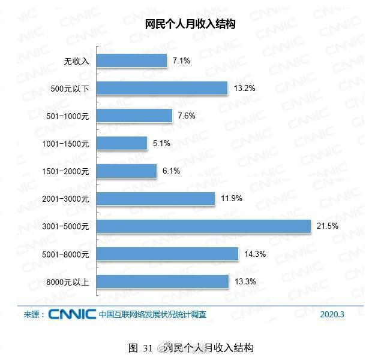

中国网民数破9亿 其中网络娱乐类用户规模大幅提升
4月28日，中国互联网络信息中心CNNIC发布《第45次中国互联网络发展状况统计报告》。报告显示，截至2020年3月，我国网民规模达9.04亿，较2018年底增长7508万，互联网普及率达64.5%，较2018年底提升4.9个百分点。
报告统计，截至2020年3月，我国手机网民规模达8.97亿，较2018年底增长7992万，我国网民使用手机上网的比例达99.3%，较2018年底提升0.7个百分点。
我国网民使用手机上网的比例达99.3%;使用电视上网的比例为32.0%;使用台式电脑上网、笔记本电脑上网、平板电脑上网的比例分别为42.7%、35.1%和29.0%。

报告提到，2020年初，受新冠肺炎疫情影响，网络娱乐类应用用户规模和使用率均有较大幅度提升。
据统计，截至2020年3月，网络视频(含短视频)、网络音乐和网络游戏的用户规模分别为8.50亿、6.35亿和5.32亿，使用率分别为94.1%、70.3%和58.9%。
网络视频(含短视频)已成为仅次于即时通信的第二大互联网应用类型。截至2020年3月，我国网络视频(含短视频)用户规模达8.50亿，较2018年底增长1.26亿，占网民整体的94.1%;其中，短视频用户规模为7.73亿，占网民整体的85.6%。
网络消费方面，报告统计，截至2020年3月，我国网络购物用户规模达7.10亿，较2018年底增长1.00亿，占网民整体的78.6%;手机网络购物用户规模达7.07亿，较2018年底增长1.16亿，占手机网民的78.9%。
我国网络支付用户规模达7.68亿，较2018年底增长1.68亿，占网民整体的85.0%;手机网络支付用户规模达7.65亿，较2018年底增长1.82亿，占手机网民的85.3%。